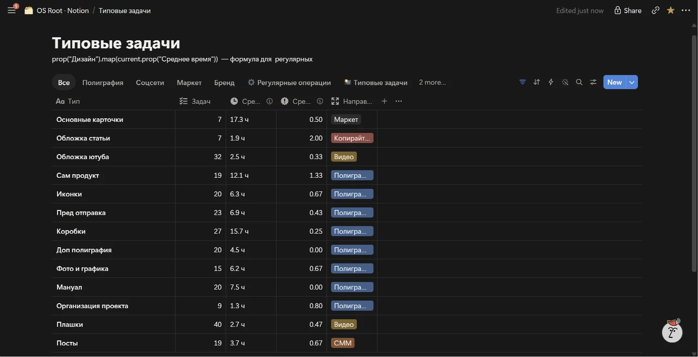
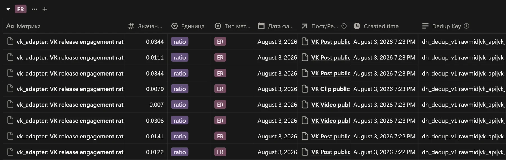
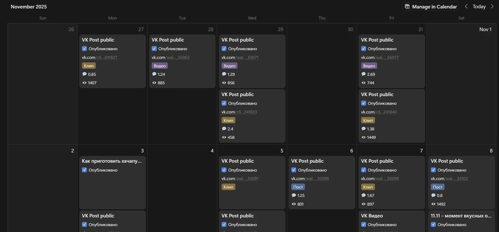
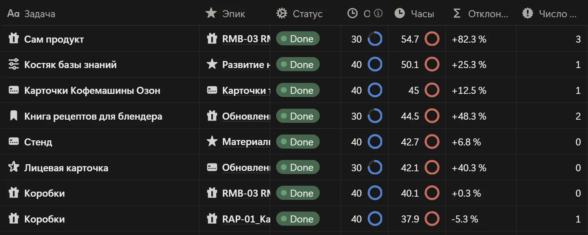

Что я решал в прошлой компании
Три основные боли
-
01
Гипотезы и метрики
БылоРешения принимались разово и ни с чем не сверялись. Сработало или нет — оставалось делом вкуса.
СталоРешение заходит гипотезой и привязывается к одной метрике. Что подтвердилось — уходит в стандарт, что нет — в список проверенных тупиков. Так карточка товара выросла с 1,7% до 3,4% CTR на равных показах: вдвое больше переходов. Правки на задачу за то же время упали с 2,4 до 0,7.
Следующая задача начинается с того, что уже проверено на своём рынке.
Одна гипотеза от постановки до стандарта: цель, метрика, факты — связаны и открываются друг из друга -
02
Материалы
БылоФото, видео и макеты делались один раз. Через полгода файл не находил даже автор, и съёмку заказывали заново.
СталоБаза материалов: у каждого файла видно контекст, трудозатраты и что он принёс. Клип с ирригатором — 9 часов работы и 900 просмотров. Обложка «как выбрать» — 1 час и 5,8% CTR. Сразу видно, что переиспользовать, а что снимать заново.
Материал перестал быть расходником: команда сама складывает работу в базу.
База материалов: что сколько стоило и что принесло -
03
Нормы вместо памяти
БылоГендиректор правил макеты в телеграм-чате. Одни и те же замечания возвращались месяц за месяцем, а ответы оставались в переписке. Сколько стоит карточка товара и сколько кругов правок она обычно собирает — не знал никто.
СталоРабота разобрана на типы. У каждого своё время и своё число правок, посчитанные по закрытым задачам. Коробка продукта — 15,7 часа и 0,25 правки на задачу. Обложка для видео — 2,5 часа. Теперь видно, что дорого, что возвращается чаще других и где норма поехала.
Руководство разгрузилось, отделы перестали переспрашивать друг друга, новый человек выходит на рабочий результат за дни вместо месяцев.

Каждый тип работы знает своё время и свои правки
Метод переносится. Notion — место, где он сейчас живёт.
Живая система
«Я не приписываю себе выручку — я показываю причинную цепочку своего вклада.»
{kind=link}

Автосбор метрик: 458 свежих фактов за один проход, свежие сверху.
{kind=link}

Живые показатели по каждому посту: вовлечённость и охваты.
{kind=link}

План и факт часов видны по каждой задаче. Отклонение — не повод наказывать, а материал: из него пересматриваются нормативы на типовую работу.
Что дальше
На собеседовании принесу гипотезы по вашему продукту: под каждой основание и дешёвый способ проверки. Скажу, какую проверял бы первой и почему. За 20 минут, без доступа к вашим данным.